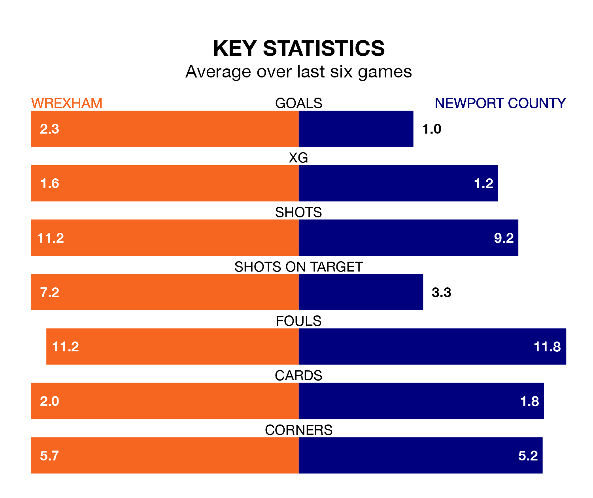

Wrexham are heavy favourites to keep all three points at home in Saturday's kick-off against Newport County.
The Dragons, who sit third in EFL League Two with 21 games played, are priced at 1.4 to seal victory at Racecourse Ground.
Sitting 14 places and 14 points behind them in the table, Newport are 6.6 to win with *Betting Company*, while the draw is at 4.7.
With 44 goals in 21 games so far this season, Wrexham are the league's joint-second-highest scorers with 2.1 goals per game. And they are conceding at an average rate, letting in 32 goals at a rate of 1.5 per game.
Newport, meanwhile, are average scorers, with 1.5 goals per game. They have conceded 1.8 goals per game.
The Dragons are in good form in EFL League Two, with four wins and a draw from their last six games.
With two wins and two draws over that period, County's form is worse – they have taken eight points from 18, compared to the hosts' 13.
In Will Evans, the Exiles have one of the league's sharpest shooters so far this season. He has notched 12 goals in 22 appearances, to sit sixth in the scoring charts.
Wrexham's top scorer, with 12 goals in 21 games, is Elliott Lee.
Wrexham's last match was on December 16, a 2-1 win against Colchester United, with Lee and Zach Mitchell (own goal) getting the goals for the Dragons.
Newport drew 1-1 with Grimsby Town last time out, also on December 16, with Omar Bogle on the scoresheet.
